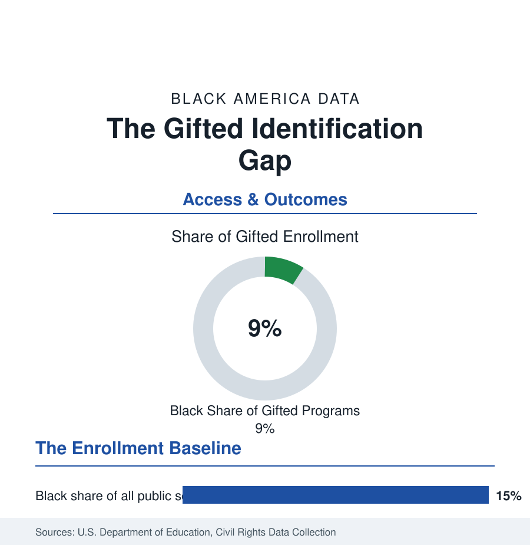

Black Education
Black Students in Gifted Programs and Advanced Courses: The Identification Gap
Black students are about 15 percent of public school enrollment but under 10 percent of gifted programs — the under-identification gap in the federal data.

Black students make up about 15 percent of the nation's public school enrollment and under 10 percent of its gifted and talented enrollment — the mirror image of the special education file, and by the research literature's reckoning the more consequential gap of the two. Advanced coursework shows the same geometry in milder form: Advanced Placement participation has grown dramatically for Black students across two decades, while pass rates and access to the full AP catalog remain stratified by school. This article reports the excellence-side access data.
Gifted Identification: Where the Gap Is Made
The Civil Rights Data Collection's gifted counts have recorded the under-representation in every edition, and the identification research explains its mechanics with unusual precision. Identification runs through referral — usually a teacher's nomination — followed by testing, and the referral step is where the loss concentrates: the Fordham and Vanderbilt studies found that Black students are referred at lower rates than White students with identical test scores, and that the referral gap narrows substantially when the referring teacher is Black (one of the teacher-diversity literature's most replicated findings). The screening research supplies the fix's evidence: districts that replaced referral-first systems with universal screening — testing every student in a grade — identified dramatically more Black and low-income gifted students (the Broward County natural experiment roughly tripled Black identification in the studied cohorts) without lowering score thresholds, demonstrating that the gap was in the funnel, not the children. The states' gifted mandates stratify the background: some states fund and require gifted services, others leave identification and service entirely local, so the CRDC map of gifted access is substantially a map of state policy.
Advanced Placement: The Growth and the Gate
The AP data carry the era's genuine progress and its limits side by side. Black AP participation has multiplied across the College Board's series — Black students now take AP exams in the hundreds of thousands annually, with the largest volumes in English, U.S. history, and psychology — and the pass-rate gap (the share scoring 3 or above running well below the overall rate) is the data's hard remainder, tracking the preparation pipeline: algebra timing, middle-school rigor, and the school's AP catalog itself. The catalog is the gate: the CRDC counts thousands of high schools offering few or no AP courses, concentrated in small and high-poverty systems, while the comprehensive suburban school offers twenty or more — so the AP 'choice' is substantially made by the building a student attends. Dual enrollment (college courses in high school, the faster-growing channel) shows the same geometry in the community-college data of the earlier profile. The score-to-credit step completes the file: colleges' AP credit policies vary, and the credit actually banked by Black AP-passers runs below the headline pass counts.
Magnet and Exam Schools: The Concentration Points
The excellence system's peaks are the selective institutions this reference has already met: the storied exam schools (Boston Latin, Stuyvesant and its sister schools, Chicago's selective-enrollment system) whose Black enrollments run in the low single digits to the teens in their own published data — the admissions-test debate's terrain — the magnet systems built under desegregation orders (several of the South's strongest Black academic institutions are magnets), and the HBCU-affiliated laboratory and early-college schools. The data point that organizes the politics: these few hundred schools produce an outsized share of the Black students reaching the STEM and selective-college outcomes of the degree profiles — so their admissions rules, screens, and lotteries carry consequences wildly disproportionate to their enrollment counts.
The Counterweights: Where Identification Works
The file's positive data are specific. Universal-screening districts post the identification gains described above; majority-Black systems with strong gifted traditions (the HBCU-town and capital-city districts) identify at rates matching their enrollment; the talent-search and pre-college programs (the university-based summer institutes, the Posse and QuestBridge pipelines at the college end) document their cohorts' outcomes as proof of the latent pool's size; and the AP growth itself — driven by fee waivers, state mandates that every high school offer the catalog, and the PSAT-based identification of likely passers — shows the trend line responding to the mechanical fixes. The literature's consensus reads plainly in the numbers: the gifted gap is an identification system artifact, measurable at each step, and correctable at the steps where it is made.
Reading the Gifted Data
The K-12 section's two identification files are one system viewed from both ends: a referral-and-judgment apparatus that over-selects Black children for disability labels and under-selects them for gifted ones, from the same classrooms, in the same years. The federal data hold both directions in a single collection — which makes the CRDC's gifted table, read beside its disability table, the most quietly damning exhibit in this reference.
More in Black Education
Black Educational Attainment: High School Parity, the College Gap
About 89 percent of Black adults hold a high school diploma and one in four holds a bachelor's degree or higher — the attainment ladder, the college completion gap, and the generational trend.
Historically Black Colleges and Universities: Enrollment and Degrees
More than 100 HBCUs enroll roughly 290,000 students and award about one in six Black bachelor's degrees — an outsized share from a small sector. The federal education data.
Black College Enrollment: 2.4 Million Students
About 2.4 million Black students are enrolled in American colleges — nearly two-thirds of them women. The NCES enrollment data by sector, level, and trend.
Source: National Center for Education Statistics and U.S. Department of Education, Civil Rights Data Collection; College Board AP Program results; Education Trust and Fordham Institute gifted-identification research.